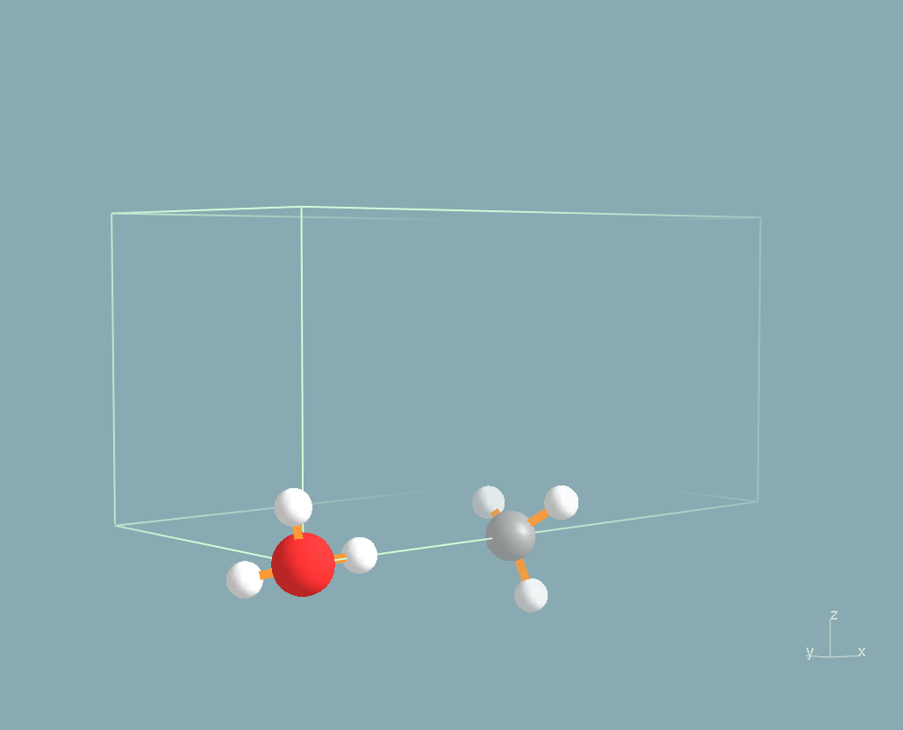

ABINIT tutorial. Parallelism on images, the string method...
String method for the computation of minimum energy paths, in parallel.
This lesson aims at showing how to perform a calculation of a
minimum energy path (MEP) using the string method.
You will learn how to run the string
method on a parallel architecture and what are
the main
input
variables that govern convergence and numerical efficiency.
This lesson should take about 1.5 hour and requires
to have at least a 200 CPU cores parallel computer.
You are supposed to know already some basics of parallelism in ABINIT, explained in the tutorial
A first introduction to ABINIT in parallel, and
ground state with plane waves.
Copyright (C) 2000-2017 ABINIT group (MT,GG)
Parallelism on images, the string method, table of content:
- 0.
Summary of the string
method
- 1.
Computation of the initial and final configurations
- 2.
Related keywords
- 3.
Computation of the MEP without parallelism over images
- 4. Computation
of the MEP using parallelism over images
- 5.
Converging the MEP
0. Summary of the String Method
The string method
[1] is an algorithm that allows the computation of a
Minimum Energy Path (MEP) between an initial (i) and a final (f)
configuration. It is inspired from the Nudge Elastic Band (NEB) method.
An elastic chain of configurations joining (i) to (f) is progressively
driven to the MEP using an iterative procedure in which each iteration
consists of two steps:
(1) evolution step:
the images are moved following the atomic forces,
(2) reparametrization
step: the images are equally redistributed along the
string.
The
algorithm presently implemented in ABINIT is the so-called "simplified
string method" [2]. It has been designed for the sampling of smooth
energy landscapes.
[1] "String method for the study of
rare events", W. E, W. Ren, E. Vanden-Eijnden, Physical
Review B 66,
052301
(2002).
[2] "Simplified string method for
computing the minimum energy path in barrier-crossing events",
W. E, W. Ren, E. Vanden-Eijnden, J. Chem. Phys. 126, 164103
(2007).
Before continuing you might work in a different subdirectory as
for the other lessons. Why not "work_paral_string" ? In what follows,
the names of files are mentionned as if you were in this subdirectory.
All the input files can
be found in the ~abinit/tests/tutoparal/Input directory.
You can compare your
results with reference output files located in
~abinit/tests/tutoparal/Refs.
In the following, when "run ABINIT over nn CPU cores" appears, you have
to use a specific command line according to the operating system and
architecture of the computer you are using. This can be for instance:
mpirun -n nn abinit < abinit.files or the use of a specific
submission file.
1. Computation of the initial and final configurations
We propose to compute the energy barrier for transferring a proton from
an
hydronium ion (H3O+)
onto a NH3 molecule:
- H3O+ + NH3
-> H2O + NH4+
Starting
from an hydronium ion and an ammoniac molecule, we obtain as final
state a water
molecule and an ammonium
ion NH4+.
In such a process, the
MEP and the barrier are dependent on the distance between the hydronium
ion and the NH3 molecule. Thus we choose to fix
the O atom of H3O+ and
the
N atom of NH3 at a given distance from each
other (4.0 Ä). The
calculation is performed using a LDA exchange-correlation functional.
You
can visualize the initial and final states of the reaction below (H
atoms are in white, the O atom is in red and the N atom in grey).

Before
using the string method,
it is necessary to optimize the initial and
final points. The input files tstring_01.in
and tstring_02.in
contain
respectively two geometries close to the initial and final states of
the system. You have first to optimize properly these initial and final
configurations, using for instance the Broyden algorithm implemented in
ABINIT.
Open the tstring_01.in
file and look at it carefully. The
unit cell is defined at the end. Note that the keywords natfix
and
iatfix are
used to keep fixed the positions of the O and N atoms. The
cell is tetragonal and its size is larger along x
so that the periodic images of the system are separated by 4.0 Ä of
vacuum in the three directions. The keyword charge
is used to
remove an
electron of the system and thus obtain a protonated molecule
(neutrality is recovered by adding a uniform compensating charge
background).
The exchange-correlation functional uses the external
library libxc.
You have to compile ABINIT using the libxc plugin (if
not, simply replace ixc
-001009 by ixc
7). This input file has to be
run in parallel using 20 CPU cores. You might use the tstring.files
file.
Edit it and adapt it with the appropriate file names.
Then run the
calculation in parallel over 20
CPU cores, first for the initial
configuration (tstring_01.in),
and then for the final one
(tstring_02.in).
You should obtain the following positions:
1) for the initial configuration
xangst
0.0000000000E+00
0.0000000000E+00 0.0000000000E+00
-3.7593832509E-01 -2.8581911534E-01 8.7109635973E-01
-3.8439081179E-01 8.6764073738E-01 -2.8530130333E-01
4.0000000000E+00 0.0000000000E+00 0.0000000000E+00
4.3461703447E+00 -9.9808458269E-02 -9.5466143436E-01
4.3190273240E+00 -7.8675247603E-01 5.6699786920E-01
4.3411410402E+00 8.7383785043E-01 4.0224838603E-01
1.0280313162E+00 2.2598784215E-02 1.5561763093E-02
2) for the final configuration
xangst
0.0000000000E+00
0.0000000000E+00 0.0000000000E+00
-3.0400286349E-01 -1.9039526061E-01 9.0873550186E-01
-3.2251946581E-01 9.0284480687E-01 -1.8824324581E-01
4.0000000000E+00 0.0000000000E+00 0.0000000000E+00
4.4876385468E+00 -1.4925704575E-01 -8.9716581956E-01
4.2142401901E+00 -7.8694929117E-01 6.3097154506E-01
4.3498225718E+00 8.7106686509E-01 4.2709343135E-01
2.9570301511E+00 5.5992672027E-02 -1.3560839453E-01
2. Related keywords
Once
you have properly optimized the initial and final states of the
process, you can turn to the computation of the MEP. Let us first have
a look at the related keywords.
1) imgmov: selects an algorithm using
replicas of the unit cell. For the string
method, choose 2.
2) nimage: gives the number of
replicas of the unit cell including the initial and
final ones.
3) dynimage(nimage):
arrays of
flags specifying if the image evolves or not (0: does not evolve; 1:
evolves).
4) ntimimage: gives the maximum
number of iterations (for the relaxation of the string).
5) tolimg: convergence criterion (in
Hartree) on the total energy (averaged over
the nimage images).
6)
fxcartfactor: "time step" (in
Bohr^2/Hartree) for the evolution step of
the string method. For the time being (ABINITv6.10), only
steepest-descent algorithm is implemented.
7) npimage:
gives the
number of processors among which the work load over the image level is
shared. Only dynamical images are considered (images for which dynimage
is 1). This input variable can be automatically set by ABINIT if the
number of processors is large enough.
8) prtvolimg:
governs the printing volume in the output file (0: full output; 1:
intermediate; 2: minimum output).
3. Computation of the MEP without parallelism over images
You can now start with the string method.
First, for
test purpose, we will not use the parallelism over images and will thus
only perform one step of string
method.
Open the tstring_03.in
file
and look at it. The initial and final configurations are specified at
the end through the keywords xangst
and xangst_lastimg.
By default,
ABINIT generates the intermediate images by a linear interpolation
between these two configurations. In this first calculation, we will
sample the MEP with 12 points (2 are fixed and correspond to the
initial and final states, 10 are evolving). nimage
is thus set to
12. The keyword npimage
is set to 1 (no parallelism over
images) and ntimimage is set to 1 (only one
time step).
You
might use the tstring.files
file. Edit it and adapt it with the appropriate
file
names. Since the parallelism over the images is not used, this
calculation has to be run over 20
CPU cores.
4. Computation
of the MEP using parallelism over images
Now
you can perform the complete computation of the MEP using the
parallelism over the images.
Open the tstring_04.in
file. The keyword
npimage has
been set to 10, and ntimimage
has been
increased to 50.
This calculation has thus to be run over 200 CPU
cores. Note that the output file is very big, so that no reference file is provided in the ABINIT package.
The convergence of the string
method algorithm is controlled by tolimg,
which has
been set to 0.0001 Ha. In order to obtain a more lisible output file,
you can decrease
the printing
volume and set prtvolimg
to 2. Here
again, you might use the tstring.files.
Edit it and adapt it with the
appropriate file names. Then run ABINIT over 200 CPU cores.
When
the calculation is completed, ABINIT provides you with 12
configurations that sample the Minimum Energy Path between the initial
(i) and final (f) states. Plotting the total energy of these
configurations with respect to a reaction coordinate that join (i) to
(f) gives you the energy barrier that separates (i) from (f). In our
case, a natural reaction coordinate can be the distance between the
hopping proton and the O atom of H2O (dOH),
or
equivalently the
distance between the proton and the N atom (dHN).
The graph below
shows the total energy as a function of the OH distance along the MEP.
It indicates that the barrier for crossing from H2O
to NH3 is ~ 1.36
eV. The 6th image gives an approximate geometry of the transition
state. Note that in the initial state, the OH distance is significantly
stretched, due to the presence of the NH3
molecule.
Note that the total energy of each of the 12 replicas of the simulation
cell can be found at the end of the output file in the section:
-outvars: echo values of variables after computation --------
The total energies are printed out as: etotal_1img, etotal_2img, ...., etotal_12img.
Also, you can can have a look at the atomic positions in each image: in cartesian coordinates (xcart_1img, xcart_2img, ...) or in reduced coordinates (xred_1img, xred_2img, ...). Similarly, the forces are printed out: fcart_1img, fcart_2img, ..., fcart_12img.
Total
energy as a function of OH distance for the path computed with 12
images and tolimg=0.0001 (which is very close to the x coordinate of
the proton: first coordinate of xangst for the 8th atom in the output
file).
The keyword npimage
can be automatically set by ABINIT. It takes the requested total number
of CPU cores divided by the number of dynamical images. The remaining
cores are, if possible, distributed over k, band and FFT.
Let us test
this functionnality. Edit again the tstring_04.in
file and comment the
npimage line. Then run the
calculation again over a number of cores of
your choice (less than 200). If the code stops with an error message
indicating that the number of kpt, band and FFT processors is not
correct, adapt the value of npband
and npfft.
Open the output file and look at the npimage
value ...
5. Converging the MEP
Like all physical quantities, the MEP has to be converged with
respect to some numerical parameters. The two most important are the
number of points along the path (nimage)
and the convergence criterion (tolimg).
1) nimage
Increase
the number of images to 22 (2 fixed + 20 evolving) and recompute the
MEP. The graph below superimposes the previous MEP (black curve,
calculated with 12 images) and the new one obtained by using 22 images
(red curve). You can see that the global profile is almost not modified
as well as the energy barrier.
Total energy as a function of OH distance for the path computed with 12 images and tolimg=0.0001 (black curve) and the one computed with 22 images and tolimg=0.0001 (red curve).
The
following animation (animated gif file) is made by putting together the
22 images obtained
at the end of this calculation, from (i) to (f) and then from (f) to
(i). It allows to visualize the MEP.
Click on the above image to visualize the animation (that should open in another window).
2) tolimg
Come back to nimage=12.
First you can increase tolimg
to 0.001 and recompute the MEP. This will be much faster than in the
previous case.
Then you should decrease tolimg
to 0.00001 and recompute the MEP. To gain CPU time, you can start your
calculation by using the 12 images obtained at the end of the
calculation that used tolimg=0.0001.
In your input file, these starting images will be specified by the
keywords xangst,
xangst_2img,
xangst_3img,
... xangst_12img.
You can copy them directly from the output file obtained at the
previous section. The graph below superimposes the path obtained with 12 images and tolimg=0.001 (red curve) and the one with 12 images and tolimg=0.0001 (black curve).
Total energy as a function of OH distance for the path computed with 12 images and tolimg=0.0001 (black curve) and the one computed with 12 images and tolimg=0.001 (red curve).